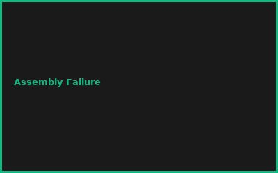
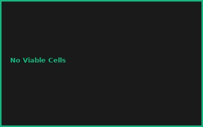
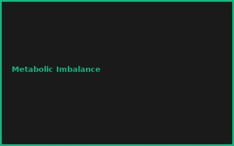

⚠️ Sicherheitshinweis (redaktionell ergänzt):
Dieser Artikel ist eine konzeptionelle, edukative Übersicht über De-novo-Genomsynthese auf Forschungsinstitut-Niveau (vergleichbar JCVI-Syn3.0) — keine Anleitung für ein Heimlabor. Reale Genomsynthese und -assembly erfordern eine BSL-gerechte Einrichtung, institutionelle Biosicherheits-/Ethikfreigabe und sind nicht für ~100 € zuhause umsetzbar, unabhängig von den hier zu Illustrationszwecken genannten Kostenvergleichen.
Kapitel 1: Minimal Genome Design
- Essential Genes Identification
- Synthetic Minimal Bacteria (Mycoplasma)
- Chassis Organism Selection
- Genome Reduction Strategies
Kapitel 2: DNA Synthesis & Assembly
# Synthetic DNA Assembly
# Gibson Assembly for de novo genomes
# DNA synthesis: 1-5 Mbp capacity
DNA_length = 580_000 # bp
read_cost = $0.03/bp # synthetic
assembly_method = "Gibson"
Kapitel 3: Cell Engineering & Iteration
- CRISPR Gene Editing
- Directed Evolution Loops
- Phenotypic Screening
- High-Throughput Characterization
Kapitel 4: Metabolic Engineering
- Pathway Redesign (Carbon Metabolism)
- Biosynthetic Production (Chemicals)
- Constraint-Based Modeling (FBA)
- Heterologous Expression
Kapitel 5: Biofabrication & Scale-Up
- Fermentation Optimization
- Bioreactor Design & Control
- Product Purification
- Economic Viability Analysis
Kapitel 6: Biosafety & Regulations
- Biological Containment (Kill Switches)
- Regulatory Framework (FDA/EMA)
- Environmental Risk Assessment
- Ethical Review Process
💡 PRO-TIPPS
🎯 Tipp: E. coli vor de novo Synthesis
Problem: Minimales Genome = komplex | Lösung: E. coli Toolkit = etabliert
💰 BUDGET-HACKS (99% KOSTENLOS!)
💰 Hack: BioBricks OpenSource Community
Original: Custom Gene Synthesis: €50K+ | Hack: iGEM Registry + DIY Assembly: €100 | Einsparnis: 99%
⚠️ FEHLER
❌ Fehler: Keine Kontrollmechanismen
Was passiert: Unkontrolliertes Wachstum | ✅ Lösung: Kill-Switches + Limited auxotrophy
🌐 COMMUNITY
iGEM, BioBricks Foundation, Synthetic Biology Community, International Biosafety Org
📸 Fehler-Galerie


